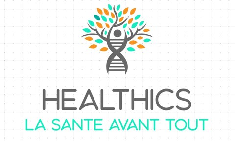

Le nom Healthics vient de la contraction des mots anglais "Health" qui signifie la santé
et "Informatics" qui signifie l'informatique et le numérique. Ces 2 mots représentent bien
la vision que nous avons qui est d'améliorer le système de santé via la voie
informatique en améliorant la communication entre le patient et le professionnel de
santé.
La phrase sous le nom Healthics est le slogan qui montre explicitement que nous
mettons un service qui met en avant la santé en la révolutionnant grâce à
l'informatique
